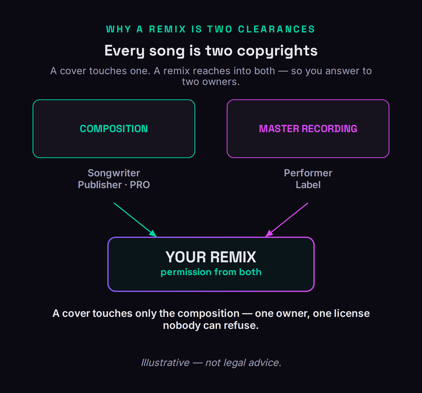
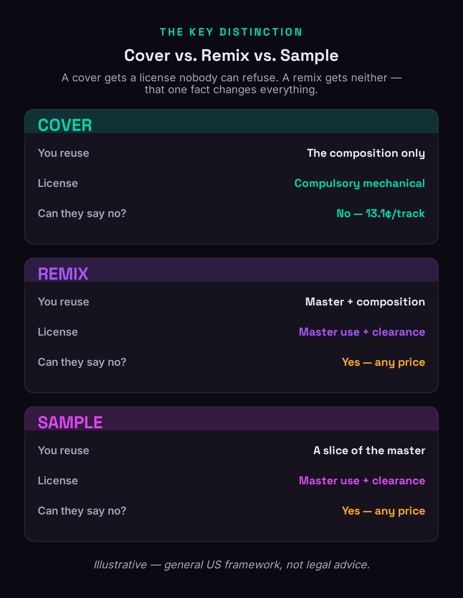
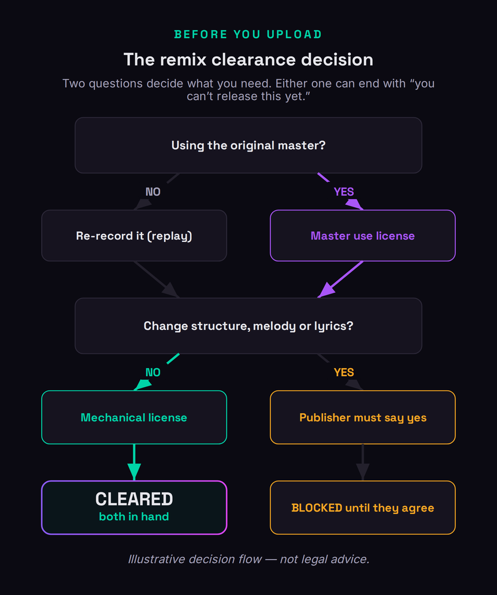

A remix is not a cover, and that single distinction is where almost everyone goes wrong. When you record a cover song, the law hands you a license nobody can refuse — pay the statutory rate and you are allowed to release it whether the songwriter likes it or not. A remix gets none of that protection. You are reusing someone's actual master recording and usually reshaping their composition, and there is no compulsory route to either one. The owner can say yes, say no, or name any price they want. That is the whole reason "can I legally release my remix?" is one of the most-searched and most-misunderstood questions a producer asks, and it is the question this guide answers in full.
To release a remix of someone else's song legally you need two permissions: a master use license from whoever owns the original recording (the label or artist), and clearance of the composition — a mechanical license if you keep the song intact, or the publisher's direct permission if you change its structure, melody or lyrics (a "derivative work"). Neither is compulsory, so the owners can refuse. Your distributor will not get these for you; it will block the track if you don't have them. The legitimate shortcuts are official remix commissions, remix contests, royalty-free or Creative-Commons stems, remixing your own music, or replaying the parts yourself.
This is general information for producers, current as of June 2026 — it is not legal advice and does not create an attorney–client relationship. US copyright law is the frame here; your country and your specific deal may differ, and the statutory mechanical rate changes every January. For any decision that involves real money or a named rights holder, get a music attorney or a clearance professional to look at your facts.
Every Song Is Two Copyrights
Before any of the licensing makes sense, you have to hold one fact in your head: every commercially released song is actually two separate copyrights, owned by potentially different people, and a remix reaches into both of them. The first is the composition — the underlying song, the melody and the lyrics, the thing a songwriter writes on paper. That copyright is owned by the songwriter and, in practice, administered by a music publisher, with performance royalties collected by a performing rights organization. The second is the sound recording, usually called the master — the specific recorded performance of that song, the actual audio file. That copyright is owned by whoever paid for and produced the recording, which for a commercial release is normally the record label, sometimes the artist.
This split is the engine behind everything that follows, so it is worth seeing it laid out. A cover song touches only one of these copyrights: you re-record the composition with your own performance, so you never use the original master, and you only owe the songwriter's side. A remix is different in kind, because it touches both at once.

When you remix a track, you start from the original recording — you load the actual stems or the released master into your session and build on them. That is the sound-recording copyright, and using it requires permission from the master owner. At the same time, you are almost always altering the song itself: changing the arrangement, chopping the vocal, rewriting the harmony, dropping or adding sections. That is the composition copyright, and altering it enough turns your version into what the law calls a derivative work, which needs the publisher's blessing. So a remix is two clearances stacked on top of each other, owed to two different parties who each have an absolute right to say no. If you have read our explainers on how music publishing works and how royalties flow, this is the same machinery viewed from the licensing side rather than the payout side.
A concrete case makes the stakes tangible. Imagine you flip a hit single from a major-label artist: the master is owned by that label, the song might have four co-writers signed to three different publishers, and the artist’s recording contract may even give them approval rights on top. To release your remix you would need the label to license the master and every one of those publishers to approve the derivative — any single one of whom can stop the whole thing. Now imagine instead that you flip an independent friend’s self-released track where they own both copyrights outright: one conversation clears it. Same creative act, wildly different clearance burden, and the entire difference comes down to who holds the two copyrights.
Cover vs. Remix vs. Sample: The Distinction That Decides Everything
Producers use "cover," "remix" and "sample" loosely, but the law treats them as three different acts with three different licensing paths, and confusing them is the single most expensive mistake in this whole area. The cleanest way to keep them straight is to ask two questions about any track you make: which copyrights does it touch, and can the owner refuse you? The answers split the three cases apart immediately.

A cover is a fresh recording of an existing song. You sing and play it yourself; you reuse the composition but none of the original audio. Because of that, US law gives you a compulsory mechanical license under Section 115 of the Copyright Act: once a song has been released commercially, anyone can record and distribute their own version of it without asking, as long as they pay the statutory mechanical rate and don't change the song's basic melody or fundamental character. The songwriter literally cannot tell you no. As of January 1, 2026 that statutory rate is 13.1 cents per copy for physical and download formats (or 2.52 cents per minute for songs over five minutes), set by the Copyright Royalty Board and adjusted for inflation each year. (If you have seen the old 9.1-cent figure floating around, that rate was frozen from 2006 through 2022 and is long gone — always confirm the current year's number, because it moves.) Our full walkthrough lives in how to release a cover song.
A remix reuses the original master recording and reshapes the composition. Neither of those is covered by the compulsory license. The master use side has never had a compulsory route — Section 115 covers making your own recording of a song, not borrowing someone else's. And the moment you change the song's structure, melody or lyrics, you have stepped outside the compulsory mechanical and created a derivative work, which Section 115 explicitly does not authorize. So a remix needs both a negotiated master use license and either a mechanical license (if you somehow kept the song untouched) or, far more often, the publisher's direct permission to make a derivative. Every one of those can be refused or priced at whatever the owner likes.
A sample sits closest to a remix: you lift a slice of the original master — a drum break, a vocal phrase, four bars of a loop — and build a new track around it. Like a remix, it reuses someone's recording and a fragment of their composition, so it needs a master use license plus composition clearance. And don't lean on the "it's only two seconds, it's too short to matter" myth: some US courts have rejected any minimum-length safe harbor for sampling a sound recording outright, so a short uncleared sample can still be infringement. We cover that path in depth in how to clear a sample and break down the numbers in what it costs to clear a sample. The takeaway across all three: only the cover comes with a guaranteed yes. Everything that touches the original recording lives or dies on permission.
The Master Use License: Who Owns It and How to Ask
The master use license is the permission to use the original sound recording, and it is usually the harder of the two clearances to get because there is no statutory backstop and no central clearinghouse to route the request through. Your first job is identification: who actually owns the master? For a major-label release it is the label, often a specific subsidiary, and the request goes through their licensing or business-affairs department. For an independent release it may be the artist directly, a smaller label, or a distributor that took an assignment of rights. The liner notes, the copyright line on the release, and databases like Discogs are your starting points; the "℗" (phonogram) credit on the release points at the recording owner, while the "©" credit points at the composition owner.
Once you know who to ask, the request itself is a negotiation, not a form. A master use license for a remix typically specifies the territory, the term, the formats and platforms, whether it is exclusive, and the money — which can be a flat buy-out fee, an advance against royalties, a share of the master revenue, or some combination. For a remix of a track that means anything commercially, expect the recording owner to want either real money up front or a meaningful cut of what the remix earns, and expect them to care a great deal about how their artist's recording is being used. They can decline for any reason, including reasons that have nothing to do with you: a pending catalog sale, an exclusivity deal, or simply a policy of not licensing remixes of that artist. This is the same family of negotiation you will recognize from licensing your music and the broader music licensing landscape, just pointed in the other direction — you are now the one asking.
The request itself should be short, specific and professional. Name the exact recording, ideally with its ISRC, describe precisely what you want to do and where it will be released, state the term and territory, and make a concrete offer — a flat fee or a revenue share — rather than asking the owner to invent a number for you. Then expect to wait. Label licensing departments work through these in queues, an unsolicited remix request from an unknown producer sits low in the stack, and a polite follow-up after a few weeks is normal rather than pushy. Building the request well does not guarantee a yes, but a vague or entitled one almost guarantees a no.
Composition Clearance: When a Mechanical Is Enough and When It Isn't
The composition side has a fork in it, and which branch you land on depends entirely on how much you changed the song. If your remix somehow leaves the actual composition intact — same melody, same lyrics, same structure, with your work confined to the production and the recording — then in principle the composition use can be handled with a mechanical license at the statutory rate, the same mechanism a cover uses. In practice almost no remix stays inside that line. The moment you rearrange sections, rewrite the harmony, re-pitch or re-time the vocal melody, cut verses, or add new musical material, you have changed the fundamental character of the song. That makes your version a derivative work, and the compulsory mechanical license specifically does not extend to derivatives. For a derivative you need the publisher's direct, negotiated permission, and they can refuse it or charge whatever they decide it is worth.
Working out which branch you are on is the decision that gates everything, so it is worth walking deliberately. Two questions settle it: are you using the original master, and are you changing the song? The first decides whether you owe a master use license at all; the second decides whether the composition side is a simple mechanical or a full derivative permission. Either question can end with "you cannot release this yet," and it is far cheaper to discover that before you have a finished record and a release date than after.

To find the publisher, search the song in the public databases your performing rights organizations maintain — the ASCAP and BMI repertory searches will name the writers and the publisher of record, and the Mechanical Licensing Collective's database covers the mechanical side. Our explainer on ASCAP vs. BMI and the guide to registering your music show how that data gets populated in the first place, which is useful background when you are reading it. Once you know the publisher, the derivative-work request, like the master request, is a negotiation over scope and money. A well-known song can have multiple co-writers across multiple publishers, and you generally need clearance from all of them, which is part of why remix clearance can be slow and why a single hold-out can stop the whole release. If you also intend to put the remix in video or other media down the line, note that those uses pull in sync licensing on top of everything here.
It also helps to separate two ideas producers tend to blur: interpolation and sampling. Interpolation means re-playing or re-singing part of the composition yourself instead of lifting the original recording — it touches only the publishing side, so you deal with the songwriters alone and skip the master entirely. Sampling lifts the actual recording, which pulls the master owner back in. A remix usually does both at once, which is exactly why it is the most clearance-heavy of the three acts. And because a charting song can carry a long list of co-writers across rival publishers, the practical bottleneck is rarely the fee — it is getting every last rights holder to say yes inside the same release window.
The Official Remix: When the Label Comes to You
There is a version of remixing where none of this friction exists, and it is worth understanding because it is the path most professional remixes actually take. An official remix is one the rights holder invites. A label or artist commissions you — or runs an open call — to remix a track, and because they already control both the master and (often) the publishing, or can clear it internally, the permission problem is solved before you start. The terms come to you in a deal: typically either a flat fee as a "buy-out," where you are paid once and the label owns the remix outright, or a smaller fee plus a share of the remix's royalties and your name on the release. Buy-outs are common for dance and pop remixes; the royalty path is more attractive if you think the remix will earn.
The catch is that official remixes are something you get offered, not something you can demand, and the offers go to producers with a track record, a relationship, or a sound the label wants. That is the honest trade: the official path removes the legal risk entirely but is gated by access. Building toward it — releasing strong original work, getting your music in front of the right A&Rs, and being the obvious person to call for a particular genre — is a career strategy, not a licensing one, and it is the cleanest reason to take the rest of your catalog and your distribution seriously. When the commission does come, read the contract for territory, term and whether the fee is truly a buy-out before you sign, because "we'll credit you" is not the same as "we'll pay you."
The Bootleg Reality: What Most Producers Actually Mean
Let's be honest about what most people typing "how to legally release a remix" are actually holding: a bootleg. You loved a track, you flipped it in your DAW, it goes off in your sets, and now you want it on streaming. The hard truth is that an uncleared remix of someone else's released song — however good, however transformative it feels — is copyright infringement on both the master and the composition until you clear it. The fact that it is everywhere on SoundCloud does not make it legal; it makes it tolerated until it isn't. Plenty of bootlegs live for years because the rights holder never notices or never bothers. But "nobody complained yet" is a risk position, not a license, and it collapses the moment the track gets traction, gets monetized, or gets caught by content-identification systems.
The consequences are real and they scale with your success. A streaming release of an uncleared remix can be taken down on a rights-holder complaint or an automated content-ID match; the revenue can be frozen or clawed back; and a pattern of uncleared uploads can get your distributor account flagged or closed. On the upload side it is worse than a cover gone wrong, because there is no cover-style compulsory license to retroactively paper over it. None of this means a bootleg is morally outrageous — remix culture is genuinely how a lot of great music gets made — but if your goal is a clean, monetizable, take-down-proof release, a bootleg is not it, and you should either clear it properly or use one of the legitimate routes below. For the related question of where transformation and commentary fit, our explainer on copyright and fair use is candid that fair use is a narrow, fact-specific defense you raise after you are sued, not a permission slip you can rely on to release a dance remix.
Legit Ways to Remix Without a Label Deal
If you are not getting an official commission and you don't want to gamble on a bootleg, there are several genuinely legal ways to scratch the remix itch, and most producers don't realize how many options they have. The first is remix contests: artists and labels regularly release official stems and invite the public to remix a track, and entering one is a pre-cleared, permission-granted way to work with a real song — just read the contest terms, because they usually define what you can do with your remix afterward and who owns it.
Treat those contest terms seriously, because they vary enormously. Some contests are genuine opportunities where winners get an official release and real placement; others are effectively unpaid work in which the label retains broad rights to every entry whether you win or not. Read what the contest grants you and what it quietly takes before you spend a weekend on it. The replay route has its own fine print too: a faithful re-recording that keeps the song intact can ride the same cover-style mechanical license, but the moment your replay reshapes the melody, structure or lyrics it becomes a derivative again and you are back to needing the publisher’s direct permission. Replaying solves the master problem, not the derivative one.
The second is royalty-free and Creative Commons stems. A large amount of music is released specifically so that other people can build on it: royalty-free sample packs and stem libraries, and tracks released under Creative Commons licenses that permit derivative works. These let you make and release a remix legally, but you must read the specific license — some Creative Commons licenses forbid commercial use or forbid derivatives entirely, and "royalty-free" describes the payment model, not a blanket permission, so check whether commercial release and remixing are actually granted. The mechanics here overlap with beat licensing, where the same "read exactly what the license grants" discipline applies.
The third route is the one hiding in plain sight: remix your own music. If you own or co-own the master and the composition — your own released tracks, or a collaborator's where you have the rights — there is nobody to ask, and you can rework your catalog freely. This is why distributors that let you release remixes at all generally restrict it to remixes of your own work unless you bring permission. The fourth is the full replay, sometimes called interpolation or a sound-alike: you re-record every element yourself instead of using the original master. Replaying removes the master use problem entirely, because there is no original recording in your track — you only have the composition to deal with, which means a mechanical license if you keep the song faithful, or a derivative permission if you reshape it. It is more work, but it converts the hardest clearance into the easiest one. Before any of these ships, run it through a pre-delivery checklist so the rights questions are answered while they are still cheap to fix.
What Distributors and Spotify Actually Allow
Here is the part that surprises people: your distributor will not solve any of this for you, and it is not built to. DistroKid, TuneCore and CD Baby are delivery pipes — they move your finished, cleared track to the stores. They do not clear remixes, they cannot grant you a master use license, and their terms put the entire responsibility for rights on you. DistroKid's own help center is explicit that to upload a DJ mix or a remix you must already have permission from all concerned parties, and that you cannot upload songs containing uncleared third-party material. Every major distributor asks, during upload, whether your track contains anyone else's work; answer it honestly, because the system is increasingly able to catch you, and an unlicensed remix that slips through can be pulled later, which is worse than being blocked up front since you lose the streams you built.
It is worth understanding how you actually get caught, because “nobody will notice” is the assumption that sinks people. The streaming platforms run audio-fingerprinting and content-identification systems that match every upload against a reference database of released recordings, and an uncleared remix built on a recognizable master is precisely what those systems exist to flag. A match can reroute your revenue to the original rights holder, mute or block the track in some territories, or trigger a takedown and a strike against your distributor account. Detection is not perfect and plenty still slips through — but it improves every year, and the tracks most likely to be caught are exactly the ones doing well enough to be worth releasing.
Spotify is the platform people specifically ask about, and the accurate 2026 answer has two parts. First, as a place to distribute your own release, Spotify is downstream of your distributor — so the same rule applies: you can put a remix on Spotify only if you have cleared it (or it is a remix of your own work). There is no "upload a remix" permission that bypasses the rights. Second, the thing many producers are half-remembering is a different, newer development: Spotify has said it has built a consumer feature that would let listeners generate AI remixes and covers of existing songs inside the app, and that the only thing holding back a launch is striking licensing deals with rights holders. That is a future, licensing-gated product for in-app creation — not a route for you to release your bootleg today. Until and unless it ships with those licenses in place, "remixing on Spotify" is still a permission problem, exactly like everywhere else. The mechanics of getting any release onto the platforms in the first place are in how to distribute your music.
How to Actually Get a Remix Cleared
If you have a remix worth releasing, here is the order of operations that gets it done legally. None of it is mysterious; it is mostly identification, paperwork and patience — and it is exactly the kind of work a clearance service exists to take off your hands.
- Classify what you actually made. Before anything else, name it: is your track a cover, a remix, a sample-based work, or fully original? Then list which copyrights it touches — composition only, or composition and master. That classification decides every license you will need, and getting it wrong is how producers chase the wrong permission for weeks.
- Identify both owners. Find the master owner from the recording's ℗ credit, the label copyright line and Discogs; find the publisher and songwriters from the ASCAP and BMI repertory searches and the MLC database. A popular song can have several co-writers and publishers, and you need all of them, so build the full list before you send a single email.
- Decide whether your version is a derivative. Be honest about how much you changed the song. If you altered structure, melody or lyrics, you need the publisher's direct permission for a derivative work, not just a mechanical license — and you should assume you did, because nearly every real remix does.
- Request the master use license and the composition clearance. Approach the recording owner for the master use license and the publisher(s) for the composition. Be specific about territory, term, formats and platforms, and be ready to negotiate a fee or a royalty share. Expect this to take time, and expect that any one party can decline.
- Get it in writing before you upload. A verbal "sure, go ahead" is not a license. Get signed permissions covering both copyrights, keep them on file, and only then deliver to your distributor — which will require you to attest that the track is cleared.
Set your expectations on time and money before you begin, because both can run larger than a first-time clearer assumes. Identifying every owner can take days of database work; reaching a label’s licensing desk and getting an answer can take weeks; and a popular song with several publishers multiplies every step. On cost there is no statutory ceiling — a master use license and a derivative permission are worth whatever the owners decide, which for a valuable track can mean a genuine fee, an advance, or a share of the revenue. None of that should scare you off a remix worth releasing. It should simply tell you to budget the time and the negotiation up front, rather than discovering them after the record is finished and the release date is set.
That sequence is straightforward to describe and genuinely tedious to execute, especially when a song has multiple publishers or the master owner is hard to reach. This is the work the rights and clearance world is built around, and it is the specific problem MusicProductionWiki's clearance service is being built to handle — finding the owners, sending the requests, and brokering the licenses so you can release a remix cleanly instead of either gambling on a bootleg or giving up. If you want a head start on the do-it-yourself version, the copyrighting your music guide and the broader SoundExchange explainer fill in the surrounding rights picture this clearance work sits inside.
Before You Release: Three Checks
Run these three checks before you put a remix out and you will catch the problems that get tracks pulled or clawed back — while they are still cheap to fix.
- Write one sentence: is this track a cover, a remix, a sample-based work, or fully original? Be strict — if you loaded the released audio into your session, it is not a cover.
- List which copyrights it touches: composition only, or composition and master. A cover is composition-only; a remix or sample is both.
- From that, state the consequence out loud using the comparison above: which licenses you need, and whether the owner can refuse you. If the answer is "both, and yes they can refuse," you know you have a clearance job, not an upload.
- Pick the song you want to remix and find the master owner from the release's ℗ credit, the label copyright line, and its Discogs entry.
- Find the publisher and songwriters by searching the song in the ASCAP and BMI repertory databases and the MLC. Write down every co-writer and every publisher — not just the first one.
- Count your hold-outs: any single owner on that list can stop the release. If there are four publishers across three writers, you now understand why this can take a while.
- Decide honestly whether your remix is a derivative work: did you change the structure, melody or lyrics? If yes, your composition ask is the publisher's direct permission, not a mechanical.
- Draft a one-paragraph master use request to the recording owner that states the territory, term, formats and platforms you want, and whether you are offering a flat fee or a royalty share.
- Pressure-test the whole release against the rights gates with the rights navigator, then decide: clear it yourself, hand it to a clearance service, or pivot to a contest, a Creative-Commons stem, or remixing your own work.
Frequently Asked Questions
Yes, if it is someone else's song and you want to release it. A remix reuses the original master recording and usually alters the composition, and neither use is covered by a compulsory license — so you need a master use license from the recording owner and clearance from the publisher. The only times you don't need outside permission are when you remix your own work, use officially provided stems (a contest or a Creative-Commons release), or replay every element yourself so no original recording is involved.
Only if it is cleared or it is a remix of your own work. Spotify is downstream of your distributor, and distributors require you to attest that the track is cleared; an unlicensed remix can be blocked at upload or pulled later. Separately, Spotify has said it has built an in-app feature for listeners to generate AI remixes and covers, but it has not launched because it depends on licensing deals with rights holders — that is a future product for in-app creation, not a way to release your own bootleg today.
A cover is a brand-new recording of an existing song — you reuse the composition but none of the original audio, so US law gives you a compulsory mechanical license that the songwriter cannot refuse, currently 13.1 cents per copy for downloads and physical. A remix reuses the original master recording and reshapes the song, so it needs negotiated permission for both the master and the composition, and either owner can say no or set the price. In short: a cover comes with a guaranteed yes; a remix does not.
It is the permission to use a specific sound recording — the original master — in your project. Because a remix is built on the original recording, you need this license from whoever owns that master, normally the record label or the artist. There is no compulsory route to it, so it is fully negotiable: the owner sets the territory, term, formats, exclusivity and fee, and can decline. It is separate from, and in addition to, the composition clearance you owe the publisher.
Yes, completely. Because there is no compulsory license for a remix, the master owner and the publisher each have an absolute right to say no, for any reason or none — a pending catalog sale, an exclusivity deal, a policy against remixes of that artist, or simply not liking your version. They can also say yes but name a price you can't afford. That veto is the defining legal fact of remixing, and it is why the legitimate shortcuts — contests, Creative-Commons stems, your own catalog, full replays — matter so much.
An uncleared remix of someone else's released song is copyright infringement on both the master and the composition, no matter how transformative it feels. Many bootlegs survive on SoundCloud because the rights holder never acts, but that is tolerance, not permission, and it ends the moment the track is monetized, gains traction, or is caught by content-ID. On streaming it can be taken down, have its revenue frozen, and get your distributor account flagged. If you want a clean, monetizable release, clear it or use a legal route instead.
There is no fixed price, because nothing here is statutory — both the master use license and the derivative permission are negotiated. For a track with real commercial value, expect the recording owner and publisher to want either a meaningful flat fee, an advance, or a share of the remix's revenue, and the total depends on the song's value, the territory and how the remix will be used. The one fixed reference point is the statutory mechanical rate (13.1 cents per copy in 2026), but that only applies to a faithful, non-derivative reproduction of the composition — which most remixes are not. Budget for negotiation, not a sticker price.
Often yes, but read the exact license. Royalty-free stem packs and Creative-Commons releases are made to be built on, which can make a remix fully legal — but "royalty-free" describes the payment model, not a blanket permission, and some Creative-Commons licenses forbid commercial use or forbid derivative works entirely. Confirm that the specific license grants both commercial release and the right to make derivatives before you ship. When the stems are officially cleared for remixing, you skip the master-use and publisher negotiations altogether, which is exactly why this is one of the cleanest routes.